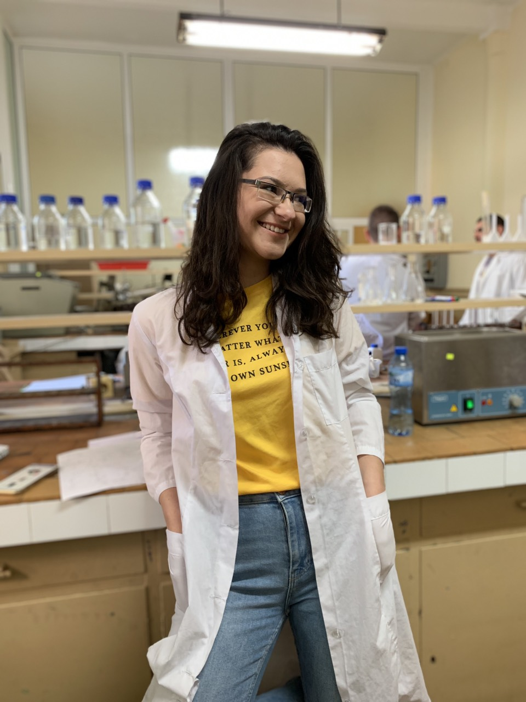
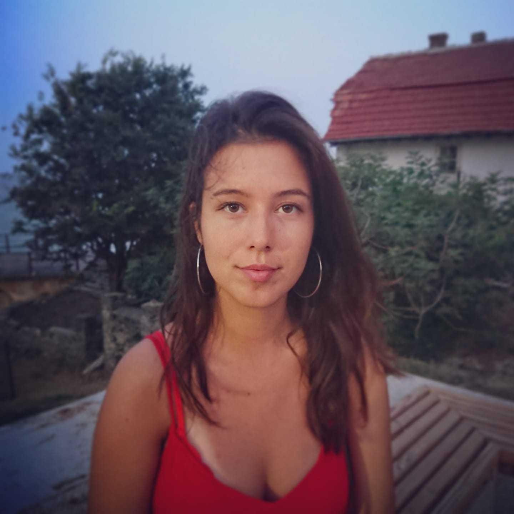
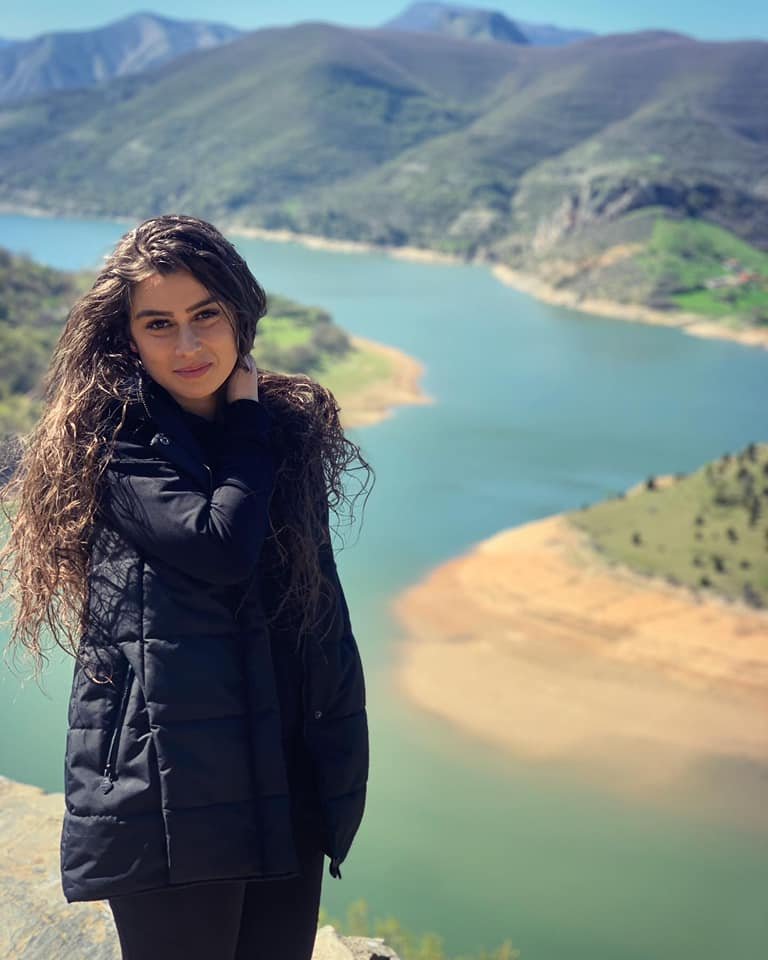

За нас
Ние сме екип от млади и позитивни хора, които са приели за лична мисия да помагат на хората. В секция нутрициология може да получите повече информация, за "начина", по който сме избрали да ви бъдем полезни.
Ние сме екип от млади и позитивни хора, които са приели за лична мисия да помагат на хората. В секция нутрициология може да получите повече информация, за "начина", по който сме избрали да ви бъдем полезни.
Ние сме екип от млади и позитивни хора, които са приели за лична мисия да помагат на хората. В секция нутрициология може да получите повече информация, за "начина", по който сме избрали да ви бъдем полезни.
Фатме Али е родена в град Хасково. Завършва Природо-математическата гимназия в град Хасково с профил биология и интензивно изучаване на английски език, след което записва и завършва специалност "медицинска биология" към Пловдивски университет. От малка има интерес към алтернативната медицина, а след личен проблем още повече започва да я изучава. Има опит с хранителните добавки вече над 6 години. Провокирана от интереса си към функционалното хранене и билкови тинктури записва и завършва клинична нутрициология към нутрициология към Лондонския колежа по практична хомеопатия. Успешно практикува своята професия, а от скоро се занимава и с web-development.
Мирослава Иванова е родена в Димитровград. Завършва своето образование в Хасковската Природо-математическата гимназия, след което се насочва към чужбина, там избира да учи Global Health and Nutrition в University College Copenhagen, след като завършва своето образование иска да се върне в родината си и да практикува наученото на родна земя. Стажувала е при лицензиран нутрициолог, с фокус превенция и терапия на заболявания по възможно най-природосъобразен и индивидуален подход. Фитотерапия, диететика и правилно суплементиране са нейните най-големи интереси.
Шефие Билял е родена в Хасково. Завършва Природо-математическата гимназия в град Хасково с профил биология и интензивно изучаване на английски език. След гимназията се насочва към медицината. Завършва специалност медицинска сестра към Тракийски университет Стара Загора. Практикува своята професия в Хасковската болница. Към момента награжда своите знания с магистърска степен "Управление на здравни грижи" към Тракийски университет Стара Загора.
„Лекарят лекува, но природата излекува.“ - Хипократ